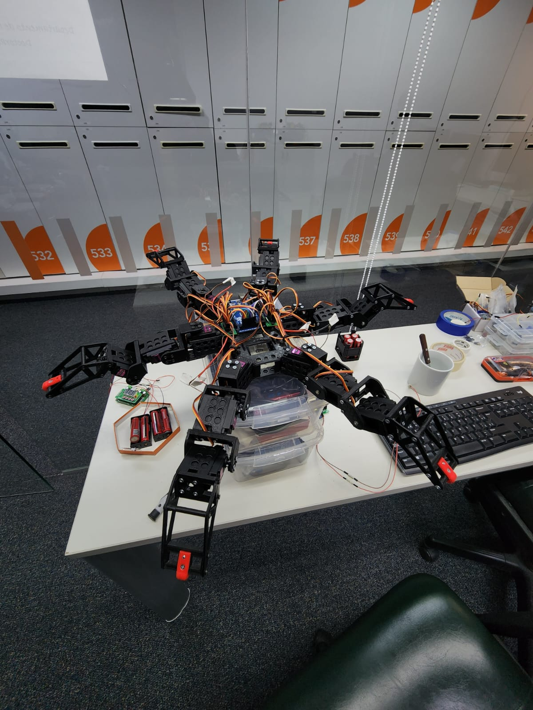
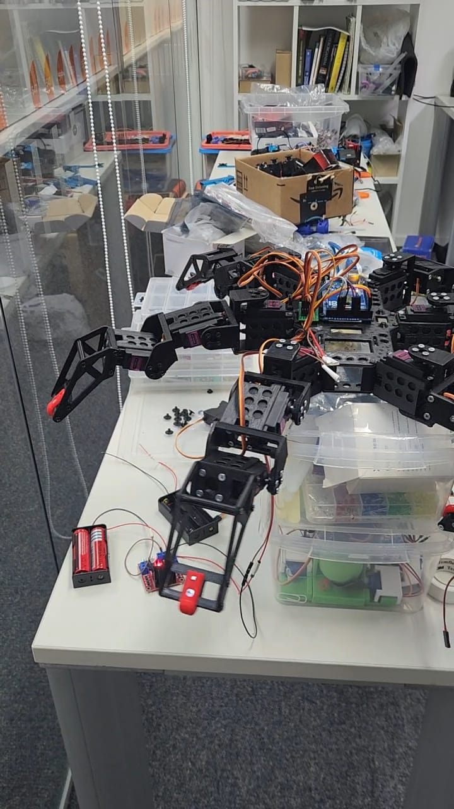
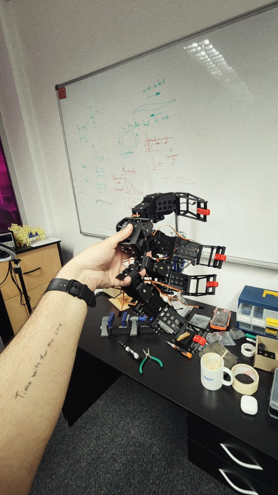
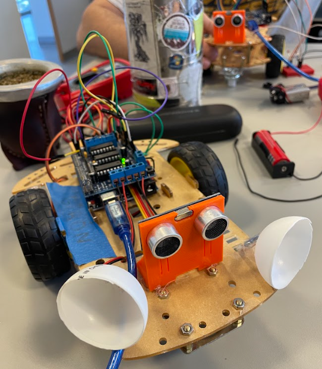
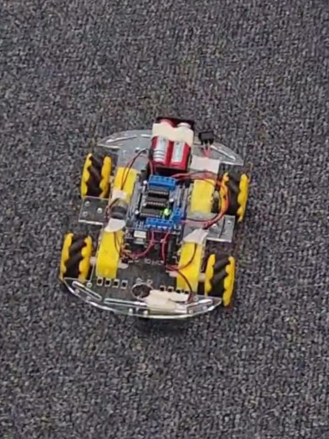
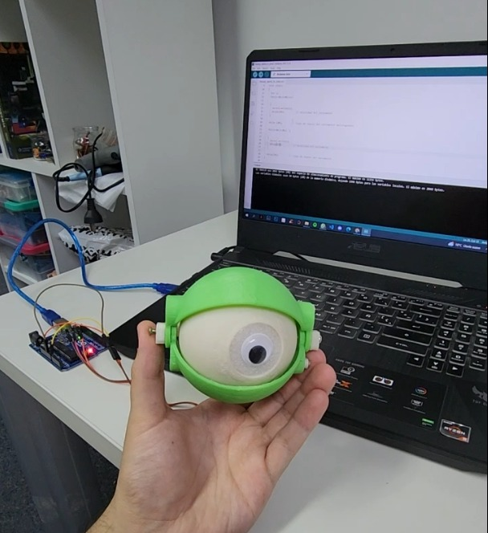

About Me
I am a Physicist and PhD candidate at ITBA, working on computational and robotic models of proprioception. My research explores how neural dynamics and connectome-based architectures give rise to cognition, embodied motor control, and emergent behavior, using interdisciplinary tools at the intersection of neuroscience, robotics, and complex systems.
🏛 Affiliations & Support
📄 Publications & Preprints
-
Hemispheric-Specific Coupling Improves Modeling of Functional Connectivity
arXiv -
The Role of Connection Density in Adaptive Networks with Chaotic Units
arXiv -
Undergraduate Thesis: “Dynamics and Structure in Adaptive Neural Networks”
UNR RePHip repository
📌 Poster Presentations in Conferences and International Schools
- Modeling Functional Connectivity Alterations in Schizophrenia Patients from the Structural Connectome (with Hernán Villota, Tomás Bosch, and Patricio Orio). Presented at XIV National Congress and XV International Seminar of Neurosciences, Bogotá, Colombia (April 2025).
- Phase Transition in an Adaptive Network with Chaotic Units (with Pablo Gleiser). Presented at School on the Origins of Life, Behavior and Cognition – ICTP-SAIFR, São Paulo, Brazil (March 2025); School on Synchronization: from Collective Motion to Brain Dynamics – ICTP-SAIFR, São Paulo, Brazil (February 2025); IRCN/Chen Institute Joint Course on Neuro-inspired Computation – University of Tokyo, Japan (July 2024); RAFA 108 – Bahía Blanca, Argentina (September 2023); RAFA 107 – Bariloche, Argentina (September 2022); Science, Technology and Innovation Conference – Rosario, Argentina (October 2022).
- Preliminary Study of the Viscoelastic Properties of Red Blood Cells Irradiated with Gamma Radiation Using a Rheometer (with F. Gómez Fava et al.). Presented at RAFA 107 – Bariloche, Argentina (September 2022); Science, Technology and Innovation Conference – Rosario, Argentina (October 2022).
🤖 Robotics Prototypes & Evolution
A compact carousel showing the progression of my robotics prototypes.








🎓 Relevant programs and courses
- School on the Origins of Life, Behavior and Cognition, ICTP-SAIFR, Brazil — March 2025
- School on Synchronization: from Collective Motion to Brain Dynamics, ICTP-SAIFR, Brazil — February 2025
- Latin American Summer School of Computational Neuroscience, University of Valparaíso, Chile — January 2025
- Artificial Intelligence Systems, ITBA, Argentina — August–November 2024
- Complex Networks, ITBA, Argentina — August–November 2024
- Modeling and Analysis of Complex Systems, University of Buenos Aires, Argentina — July 2024
- IRCN/Chen Institute Joint Course on Neuro-inspired Computation, University of Tokyo, Japan — July 2024
- Neuroscience and Productive Development, ITBA, Argentina — March–June 2024
- Latin American School of Computational Neuroscience, University of São Paulo, Brazil — January 2024
- Bioinspired Robotics, ITBA, Argentina — August–December 2023
- Introduction to Medical and Biomedical Physics, UNR, Argentina — October–December 2019
📑Curriculum Vitae
Google Drive (PDF)For a condensed or customized version of my CV, please do not hesitate to contact me.
📬 Contact
Email: rpluss@itba.edu.ar